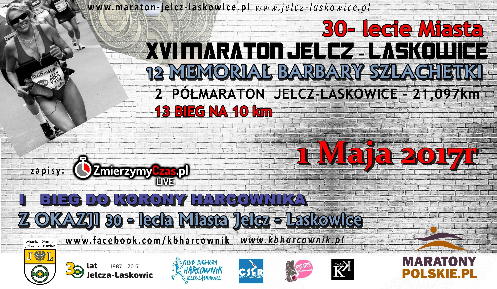
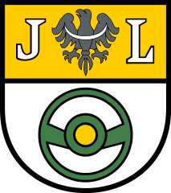
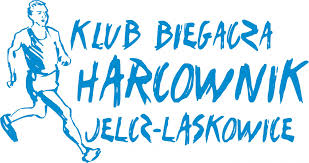

|
|
Wyniki:
Maraton:
1. Paweł Pelc - 2:44:17
1. Anna Grześkowiak - 3:27:03
2. Dominik Buk - 2:44:18
2. Elżbieta Juszczak-Derzypolska - 3:34:10
3. Przemysław Gibiec - 2:53:59
3. Lidia Eling - 3:35:39
Wyniki OPEN
Kobiety
Powiat
Gmina
Półmaraton:
1. Piotr Ślęzak - 1:19:26
1. Anna Zaczyńska - 1:39:47
2. Paweł Rak - 1:21:24
2. Małgorzata Kraszewska - 1:43:27
3. Adam Maniak - 1:21:34
3. Beata Borowicz - 1:43:29
Pełne wyniki
|
10,5 km:
1. Tomasz Sobczyk - 0:36:41
2. Tomasz Kłonowski - 0:37:03
3. Łukasz Krasowski - 0:37:55
Pełne wyniki
|
10,5 km NW:
1. Krzysztof Skiba - 1:05:42
2. Tomasz Kubiak - 1:11:04
3. Teresa Partyka - 1:13:37
Pełne wyniki
|
|


Partnerzy:
|